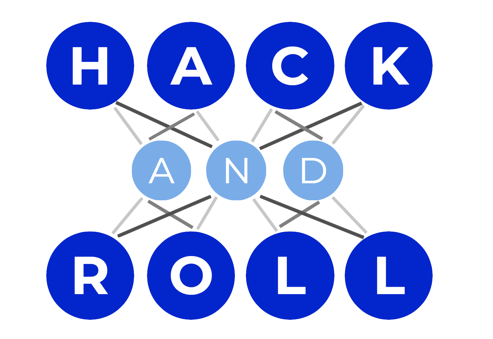
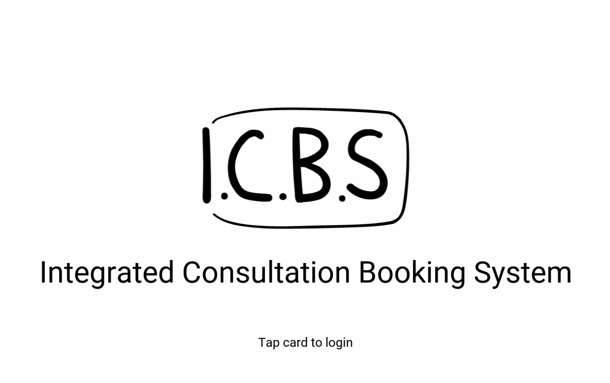

>"Experience"|
Singapore Airlines MAY 2019 TO AUG 2019
Prototyped innovative ideas that were submitted by the staff. Majorly involved with developing a web view application for
Android and iOS that uses Google's Cloud Vision API for detect text from images. This included developing a classification algorithm using NLP
to extract relevant fields of the subject. Also developed an iOS application to be deployed at express-kiosks that can be integrated with smart robots
to automate staff-intensive tasks.
Major languages(libraries) and technologies used are Node.js(JavaScript), Python and Java.
Undergraduate Research Opportunities Programme SEPT 2018 TO DEC 2018

Used Machine Learning to learn the relationship between mechanical/functional behaviour and a fully discretized set of parameters (e.g., voxelization) of a microstructure.
Used the ML model for efficient simulation and design optimization of large-scale lattice structures. Helped in developing a VoxNet CNN using a pretrained classification dataset(ShapeNet-40).
Major languages(libraries) and technologies involved are Python, TensorFlow and NumPy.
NUS HackNRoll 2019 JAN 19th TO JAN 20th 2019
Winner of Singapore's largest annual hackathon with an estimate turn-up of 400 participants. Supported in developing an emotion classifier CNN built on a pre-trained dataset. The program is intended
for actors who wish to enhance their acting skills. The classifier will rate your emotions against an arbitrary score and will suggest improvements using gamified elements. Other potential uses cases are for recruiting divisions in MNCs during
a candidate's job interview. Source code of the project can be found here.
Major languages(libraries) and technologies involved are Python, Keras and PyGame.
Student-Professor Consultation Booking System JAN 2019 to APRIL 2019
Lead developer(s) of a student-professor consultation booking system; targeted at undergraduates to minimize email conversations and to consolidate a student-faculty scheduling system.
Application consisted of two different entry points, one each for student and professor. Authentication could be done manually using username and password or by scanning the matriculation card against the
NFC module over a Raspberry Pi. Real time updates and backend data were bypassed to Firebase online. Source code of the project can be found here.
Major languages(libraries) and technologies involved are Python, Firebase and Raspberry Pi.
*Fair use of copyrighted material
{kind=link}